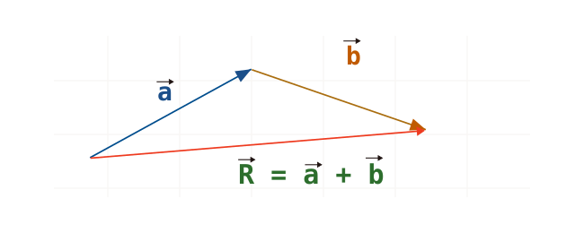
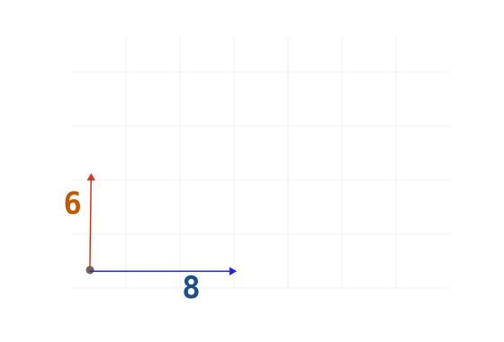
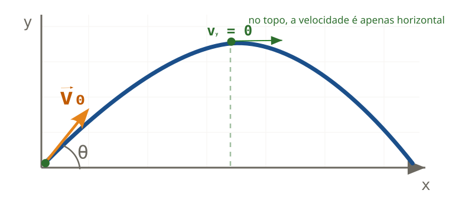
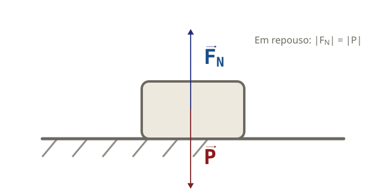
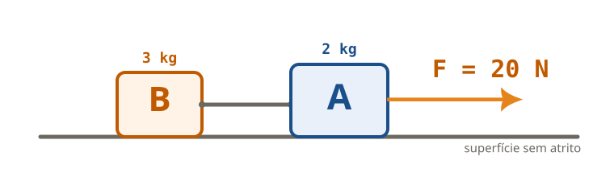

Revisão dos conceitos que caem na prova: vetores, lançamento oblíquo e as Leis de Newton. Cada bloco traz uma explicação curta da matéria e, em seguida, exercícios para treinar o raciocínio — em situações diferentes das da avaliação.
16 questões de treino
4 blocos de teoria
Correção comentada
💡 Como usar: Leia a teoria de cada bloco, tente resolver sozinho e só depois confira a correção.
Identificação
Bloco 1Vetores
📘 Teoria
Grandezas vetoriais e como somar vetores
Grandezas escalares ficam definidas só com um número e a unidade (massa, tempo, temperatura). Já as grandezas vetoriais precisam também de uma orientação no espaço — elas têm módulo (tamanho), direção (a reta) e sentido (para que lado aponta). São vetoriais, por exemplo, a velocidade, a aceleração e a força.
Para somar vetores, o resultado depende de como eles estão orientados:
Mesma direção e mesmo sentido: os módulos se somam.
Mesma direção e sentidos opostos: subtraímos os módulos; a resultante aponta para o lado do maior.
Perpendiculares (90°): usamos o Teorema de Pitágoras.
Caso geral: ligamos os vetores "ponta com origem" (regra do polígono); a resultante vai da origem do primeiro à ponta do último.
Perpendiculares: R = √(a² + b²)

Regra do polígono: a e b ligados ponta-com-origem; a resultante R fecha o caminho.
1
Assinale a alternativa que apresenta somente grandezas vetoriais:
2
Dois vetores perpendiculares entre si têm módulos 6 e 8. O módulo do vetor resultante é:

3
Dois vetores de mesma direção e sentidos opostos têm módulos 10 N e 4 N. O módulo da resultante é:
4
Somando dois vetores de módulos 5 e 9, e variando o ângulo entre eles, o módulo da resultante pode assumir valores entre:
O menor valor ocorre quando eles têm sentidos opostos; o maior, quando têm o mesmo sentido.
Bloco 2Lançamento Oblíquo
📘 Teoria
Dois movimentos ao mesmo tempo
No lançamento oblíquo o corpo descreve uma parábola. O truque é separar o movimento em dois eixos independentes, decompondo a velocidade inicial com o ângulo θ:
vₓ = v₀·cos θ
v₀ᵧ = v₀·sen θ
Eixo horizontal (x): sem força → vₓ é constante (MRU) o tempo todo.
Eixo vertical (y): só a gravidade age → é um MUV, como um lançamento vertical.
No ponto mais alto: vᵧ = 0, mas vₓ continua existindo (a velocidade total não é nula!).
Tempo de subida: t = v₀ᵧ / g. Como a trajetória é simétrica, o tempo total de voo é o dobro disso.
Altura máxima: H = v₀ᵧ² / (2g). O alcance é máximo quando θ = 45°.

No topo a componente vertical zera; a horizontal permanece constante o tempo todo.
5
Num lançamento oblíquo, desprezando a resistência do ar, no ponto mais alto da trajetória:
6
Uma bola é chutada do chão com velocidade de 20 m/s, formando 30° com a horizontal. A altura máxima que ela atinge é:
Considere: sen 30° = 0,5; g = 10 m/s². Despreze a resistência do ar.
Use só a componente vertical: v₀ᵧ = v₀·sen θ. Depois aplique H = v₀ᵧ² / (2g).
7
Num lançamento oblíquo, um objeto leva 2 s para atingir a altura máxima. Desprezando a resistência do ar, o tempo total de voo (até voltar à altura de lançamento) é:
8
Durante o voo de um projétil lançado obliquamente (sem resistência do ar), a componente horizontal da velocidade:
Bloco 3As Leis de Newton
📘 Teoria
Os três princípios da Dinâmica
1ª Lei (Inércia): sem força resultante, o corpo mantém seu estado — fica em repouso ou em movimento retilíneo uniforme. É a "resistência" a mudanças de movimento.
2ª Lei (Princípio Fundamental): a força resultante gera aceleração na mesma direção e sentido — F = m·a. Muitas vezes ela aparece junto da cinemática: primeiro achamos a, depois a força.
3ª Lei (Ação e Reação): se A faz força em B, então B faz em A uma força de mesmo módulo e direção, sentido oposto. As duas forças do par atuam em corpos diferentes — por isso não se cancelam.
F_resultante = m · a
Duas forças aparecem em quase todo problema: o Peso (P = m·g, vertical para baixo) e a Normal (FN), que a superfície faz no corpo, perpendicular a ela.

Bloco em repouso sobre a mesa: a força normal (FN) e o peso (P) têm módulos iguais e sentidos opostos, por isso as setas foram desenhadas com o mesmo comprimento.
9
Quando um ônibus freia bruscamente, um passageiro em pé é projetado para a frente. Esse fato é explicado pela:
10
Uma força resultante de 12 N atua sobre um corpo de massa 4 kg. A aceleração adquirida por ele é:
a = F_resultante / m
11
Um corpo de 2 kg, partindo do repouso, atinge a velocidade de 10 m/s após 5 s de movimento. A força resultante que atua sobre ele vale:
Primeiro ache a aceleração (a = Δv/Δt); depois aplique F = m·a.
12
Sobre o par ação–reação descrito pela 3ª Lei de Newton, é correto afirmar que as duas forças:
Bloco 4Aplicações: Peso, Normal e Sistemas
📘 Teoria
Peso, força normal, sistemas e peso aparente
Não confunda: a massa (kg) mede a quantidade de matéria e não muda de lugar para lugar; o peso é uma força (N), dada por P = m·g, e depende da gravidade local (por isso muda na Lua, por exemplo).
A força normal (FN) é a reação da superfície. Ela se ajusta conforme as outras forças verticais: se você empurra o corpo para baixo, a normal aumenta (FN = P + F); se você puxa para cima, ela diminui (FN = P − F).
Em sistemas de blocos que se movem juntos, a aceleração sai do conjunto (a = F / m_total). Para achar a tração no fio ou a força de contato, isolamos um dos blocos e aplicamos F = m·a só nele.
A balança não mede o peso, e sim a normal. Num elevador acelerado, ela marca o peso aparente:
Repouso ou velocidade constante: FN = m·g;
Aceleração para cima: FN = m(g + a) — parece mais pesado;
Aceleração para baixo: FN = m(g − a) — parece mais leve;
Queda livre (a = g): FN = 0.
P = m·g FN = m·(g ± a)
13
Um astronauta tem massa de 80 kg. Na Lua, onde a gravidade vale g = 1,6 m/s², o seu peso é:
A massa continua 80 kg em qualquer lugar. O peso é uma força: P = m·g.
14
Os blocos A (2 kg) e B (3 kg) estão ligados por um fio ideal sobre uma superfície horizontal sem atrito. Puxa-se o bloco A com uma força horizontal F = 20 N, e A arrasta B pelo fio. A tração no fio que liga os blocos vale:

Ache primeiro a aceleração do conjunto. Depois isole o bloco B: a única força que o puxa é a tração.
15
Um livro de 2 kg está em repouso sobre uma mesa horizontal (g = 10 m/s²). Uma pessoa pressiona o livro para baixo com uma força vertical de 5 N. A força normal que a mesa exerce sobre o livro passa a ser:
16
Uma pessoa de 60 kg está sobre uma balança dentro de um elevador que sobe acelerando a 2 m/s² (g = 10 m/s²). A balança indica:
Acelerando para cima, a normal supera o peso: FN = m(g + a).